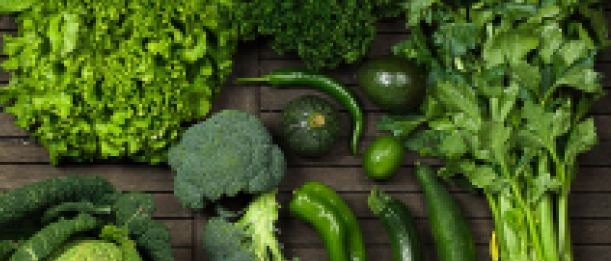
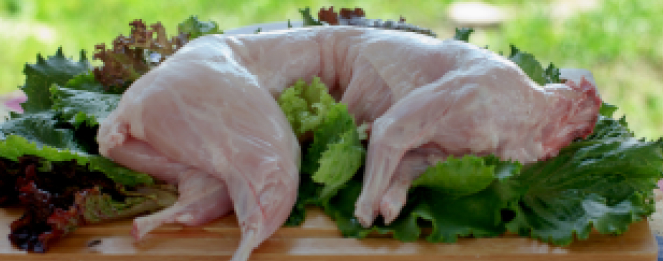
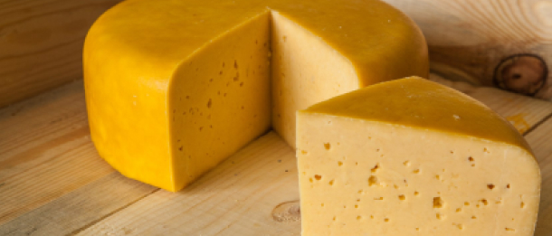

Обязательные продукты для здорового питания:
-

Овощи
Брокколи, тыква, цветная капуста, репка, огурцы. Готовьте блюда из туш еных смесей без добавления масла.
-

Мясо
Крольчатина, телятина, индейка, курица без кожи. Мясные блюда ежедневно должны присутствовать в питании в тушеном, запеченном или вареном виде.
-

Продукты из молока
Сыр, ряженка, простокваша, творог, йогурт без добавок, кефир. Желательно кушать их кормящей маме ежедневно либо через день.